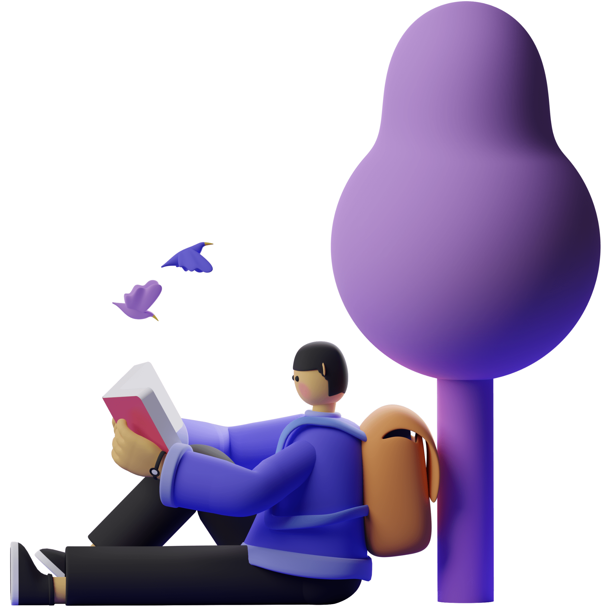

What you will get
Manage your tasks with us
& get organized

Give order to your unrelated tasks.
Whenever we are tackling a project or following through with a plan, we need it broken down.

You can now get things done.
Writing down the things you need to do is one of the most effective ways of keeping track of them all.

No more delaying important tasks.
No more Leaving an item on your To-Do list for a long time, even though it's important.
Dont Just get take our word for it
See what our customers
& users say about us
1
2
3
4
Make your life more
efficient & get most of it
GET TOBELIST FAQ
What are the advantages of using Tobelist?
What is the best way to use Tobelist?
Can Tobelist steal my data?